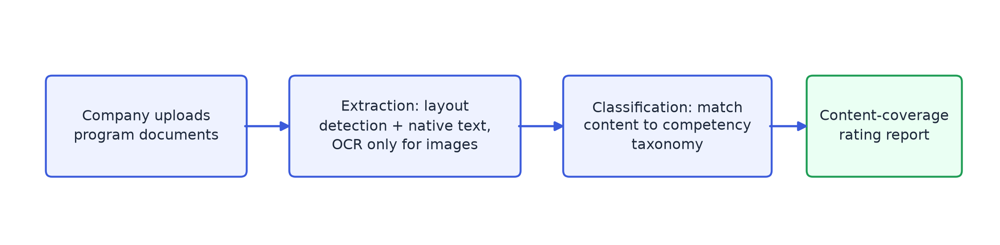

Client Program Onboarding
A document-extraction and taxonomy-mapping pipeline that automates what used to be a manual review of every company's submitted learning program.
Challenge
Companies submitting a learning program for certification would upload their program materials — PDFs and Word docs, a mix of tables, screenshots, and plain text — and the research team had to manually read through all of it to figure out what competencies the content actually covered. That's the part I automated.
Architecture & design
Two stages: extraction pulls the text out of whatever gets uploaded, classification matches that text against a four-level competency taxonomy. Both run as background workers pulling off a queue, not as part of the request itself — these documents can take a while to process, and that's not something an API call should sit around waiting on.

Approach & key decisions
Native text first, OCR only as a last resort
Running OCR on everything is slow and introduces errors on text that's already extractable natively from the PDF. So the pipeline uses a layout model to figure out what each region of a page is — text, a table, a picture — then reconciles that against the PDF's own native text layer. Anything with real text underneath it gets pulled out directly and exactly, tables included. OCR only kicks in for regions that are genuinely just images, and even then the image gets cleaned up first to cut down on garbage characters.
Matching text to a taxonomy from two directions
A single classifier wasn't reliable enough on its own to place text correctly in a four-level taxonomy in one shot. Instead, each piece of text first gets sorted into a broad competency family, then matched more precisely within that family by comparing it against reference examples — once reasoning from general to specific, once from specific to general, and averaging the two. Either direction alone missed cases the other one caught.
Keeping heavy processing off the request path
Both extraction and classification run as long-lived worker processes with their own retry limits and graceful shutdown handling, so a slow document or a crashed worker never takes the API down with it.